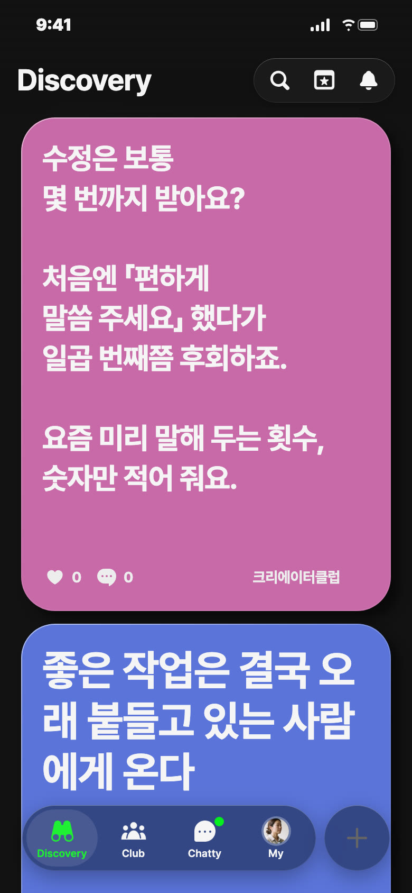
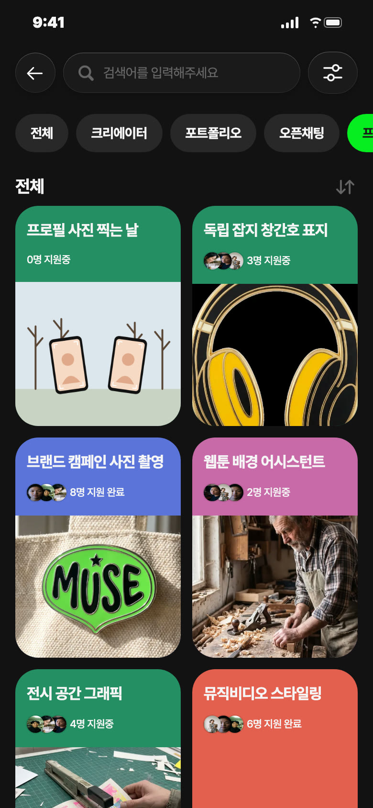
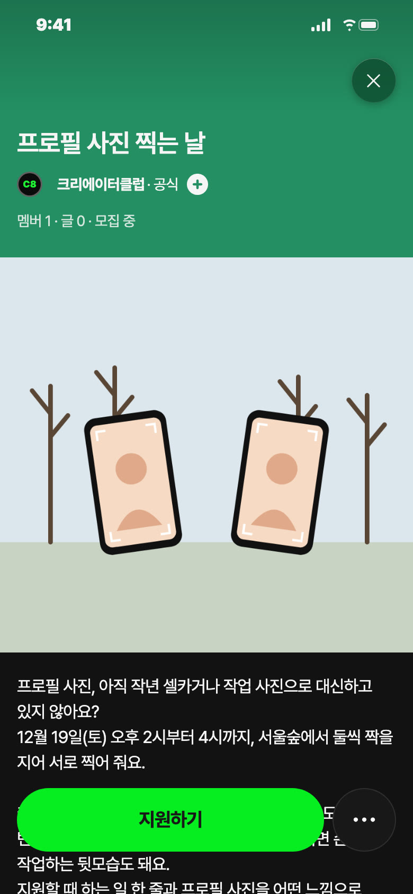
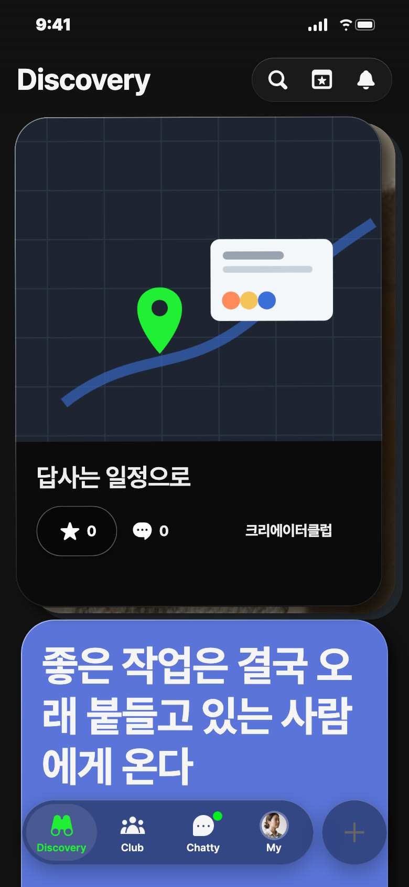
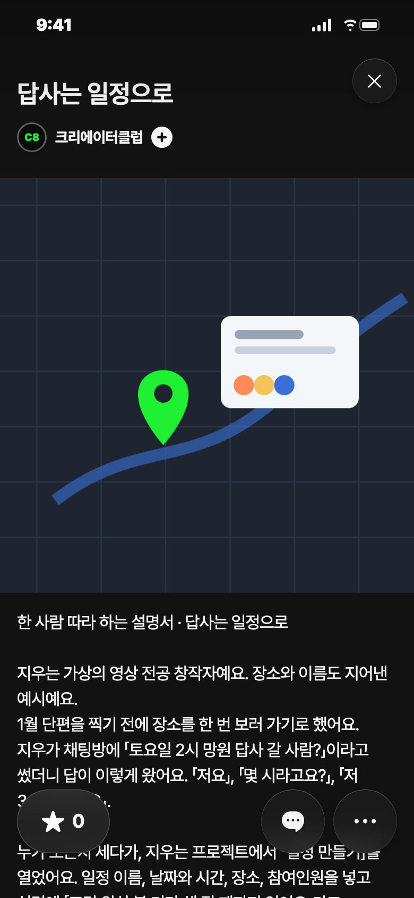

C8 앱 게시 시안 · 2026. 11. 27. 금요일 · 쉬는 날, 세 안 비축
비축 · 영감 · 게시일 미정 · 분홍

왜 지금: 연말 외주가 몰리는 때, 수정 횟수를 미리 말해 두는지 — 댓글 숫자가 다른 회원이 참고할 기준이 됨.
보낼 사람: 수정 열 번째 받는 동기에게 「너도 숫자 적어 봐」
받고 싶은 댓글: 예시·가상: 두 번이요. 세 번째부터는 따로 받아요.
참고: 배경색은 앱이 무작위로 정해요. 시안 색은 예시.
영감 글
수정은 보통 몇 번까지 받아요? 처음엔 「편하게 말씀 주세요」 했다가 일곱 번째쯤 후회하죠. 요즘 미리 말해 두는 횟수, 숫자만 적어 줘요.
비축 · 프로젝트 · 수요일 자리 후보 · 게시일 미정 · 초록


왜 지금: 연말에 프로필을 새로 정리할 때, 날짜·장소 있는 판으로 서로 사진 찍어 주기.
보낼 사람: 프로필 사진이 3년 전 셀카인 동기에게 「이거 가서 서로 찍자」
받고 싶은 지원 채팅: 예시·가상: 일러스트 해요. 작업하는 손이 나오게 바꾸고 싶어요.
게시 전: 수락·짝 지을 운영자 한 사람, 만나는 자리.
제목
프로필 사진 찍는 날
모집 내용
12월 19일(토) 오후, 서울숲에서 둘씩 서로의 프로필 사진을 찍어 줄 사람을 찾아요. 하는 일 한 줄과 바꾸고 싶은 사진 느낌을 적어 주세요.
설명
프로필 사진, 아직 작년 셀카거나 작업 사진으로 대신하고 있지 않아요? 12월 19일(토) 오후 2시부터 4시까지, 서울숲에서 둘씩 짝을 지어 서로 찍어 줘요. 카메라는 휴대폰이면 충분해요. 사진을 하는 사람도, 남을 한 번도 안 찍어 본 사람도 괜찮아요. 얼굴이 부담되면 손이나 작업하는 뒷모습도 돼요. 지원할 때 하는 일 한 줄과 프로필 사진을 어떤 느낌으로 바꾸고 싶은지 적어 주세요. C8이 수락하면 그날을 일정에 넣고, 만나는 자리는 게시판에 올려 둘게요. 짝끼리 20분씩 번갈아 찍고, 마음에 드는 한 장은 각자 골라요. 원본은 채팅방으로 주고받아요. 비가 오면 하루 전에 게시판으로 알려 드려요. 지원은 12월 15일(화)까지예요. 상품은 없어요. 다음 주부터 내 프로필을 여는 사람은, 그날 찍은 사진부터 보게 돼요.
비축 · 포트폴리오 · 설명서 다음 편 후보 · 게시일 미정


왜 지금: 촬영 전 답사처럼 누가 오는지 세야 할 때 — 프로젝트 일정·참여하기 기능 하나.
보낼 사람: 단톡방에서 「누구 와?」 세는 친구에게 「일정으로 만들어」
받고 싶은 댓글: 예시·가상: 맨날 투표 만들었는데 이거 쓰면 되겠네요.
확인 범위: iOS 26.46.0 태그 코드·디자인 원본. 실기기 화면은 나나 확인 전.
제목
답사는 일정으로
설명
한 사람 따라 하는 설명서 · 답사는 일정으로 지우는 가상의 영상 전공 창작자예요. 장소와 이름도 지어낸 예시예요. 1월 단편을 찍기 전에 장소를 한 번 보러 가기로 했어요. 지우가 채팅방에 「토요일 2시 망원 답사 갈 사람?」이라고 썼더니 답이 이렇게 왔어요. 「저요」, 「몇 시라고요?」, 「저 3시부터 돼요」. 누가 오는지 세다가, 지우는 프로젝트에서 「일정 만들기」를 열었어요. 일정 이름, 날짜와 시간, 장소, 참여인원을 넣고 설명에 「조명 위치 볼 거라 해 질 때까지 있어요」라고 적었어요. 멤버들이 그 일정에서 「참여하기」를 누르자 참여자에 이름이 하나씩 붙었어요. 「몇 시라고요?」는 채팅방 대신 일정 댓글로 왔고, 답도 거기 남았어요. 토요일 2시, 참여자에 있던 셋이 다 왔어요.